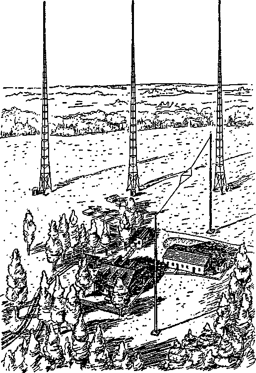
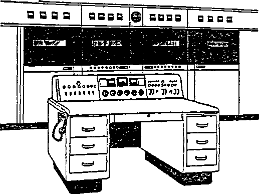

Published Semimonthly By
WATCH TOWER BIBLE & TRACT SOCIETY 117 Adams Street - - Brooklyn 1, N.Y., U.S A.
_ Officers
N. H. Knobb, President Grant Suiter, Secretary
“And all thy children shall be taught of Jehovah; and great shall be the peace of thy children.” - Isaiah 54:13.
THE BIBLE CLEARLY TEACHES
THAT JEHOVAH is the only true God, from everlasting to everlasting, and is the Maker of heaven and earth and Giver of life to his creatures; that the Word or Logos was the beginning at his creation and his active agent In creating all other things; and that the creature Lucifer rebelled against Jehovah and raised the issue of His universal sovereignty;
THAT GOD created the earth for man, made perfect man for the earth and placed him upon It; that man yielded to unfaithful Lucifer, or Satan, and willfully disobeyed God’s law and was sentenced to death; that by reason of Adam’s wrong act all men are born sinners and without the right to life;
THAT THE LOGOS was made human as the man Jesus and suffered death in order to produce the ransom or redemptive price for obedient men; that God raised up Christ Jesus divine and exalted him to heaven above every other creature and clothed him with all power and authority as head of God’s new capital organization;
THAT GOD’S CAPITAL ORGANIZATION is a Theocracy called Zion, and that Christ Jesus Is the Chief Officer thereof and is the rightful King of the new world; that the faithful anointed followers of Christ Jesus are Zion’s children, members of Jehovah's organization, and are His witnesses whose duty and privilege it is to testify to Jehovah’s supremacy and declare his purposes toward mankind as expressed in the Bible;
THAT THE OLD WORLD, or Satan’s uninterrupted rule, ended AD. 1914, and Christ Jesus has been placed by Jehovah upon the throne, has ousted Satan from heaven, and now proceeds to vindicate His name and establish the “new earth”;
THAT THE RELIEF and blessings of the peoples can come only by Jehovah’s kingdom under Christ, which has begun; that His next great act is to destroy Satan’s organization and establish righteousness completely In the earth ; and that under the Kingdom the people of good-will surviving Armageddon will carry out the divine mandate to “fill the earth" with righteous offspring, and that the human dead in the graves will be raised to opportunities of life on earth.
ITS MISSION
THIS journal is published for the purpose of enabling the people to know Jehovah God and his purposes as expressed in the Bible. It publishes Bible Instruction specifically designed to aid Jehovah’s witnesses and all people of good-will. It arranges systematic Bible study for its readers and the Society supplies other literature to aid in such studies. It publishes suitable material for radio broadcasting and for other means of public Instruction In the Scriptures.
It adheres strictly to the Bible as authority for its utterances. It Is entirely free and separate from all religion, parties, sects or other worldly organizations. It is wholly and without reservation for the kingdom of Jehovah God under Christ his beloved King. It is not dogmatic, but invites careful and critical examination of its contents in the light of the Scriptures. It does not Indulge in controversy, and its columns are not open to personalities.
Notice to Subscribers: Remittance! should be sent to office In your country In compliance with regulations to guarantee safe delivery ot money. Remittances are accepted at Brooklyn from countries where no office is located, by International money order only. Subscription rates in different countries are stated below in local currency. Notice of expiration (with renewal blank) is sent at least two' issues before subscription expires. Change of address when sent to our office may be expected effective within one month. Send your old as well as new address.
Please address the Watch Tower Society in every case.
Offices Yearly Subscription Rate
America lU.B.f, 117 Adams St., Brooklyn 1, N.Y.
Australia, 7 Beresford Rd., Strathfield, N. S. W.
British West Indies, 21 Taylor St, Port ot Spain, Trinidad
Burma, 39 Signal Pagoda Road, Rangoon Rs. 3/8
Canada, 40 Irwin Ave., Toronto 5, Ontario
England, 34 Craven Terrace, London, W.2
India, 167 Love Lane, Bombay 27 Rs. 3/8
Jamaica, 151 King St, Kingston
Newfoundland, Post Box 521, St John's
New Zealand, G. P. O. Box 30, Wellington. C. 1
Philippine Republic, 104 Roosevelt Road, San Francisco del Monte, Quezon City 2 pesos
South Africa, 623 Boston House, Cape Town
T. Hawaii, 122t> Pensacola St, Honolulu 34
R'cst Africa, 71 Broad St, Lagos, Nigeria
Translations of this journal appear in many languages.
ALL SINCERE STUDENTS OR THE BIBLE who by reason of infirmity, poverty or adversity are unable to pay the subscription price may have The Watchtower free upon written application to the publishers, made once each year, stating the reason for so requesting it. We are f;lad to thn« aid the needy, but the written application once each year s required by the postal regulations.
Printed in the United States of America
Entered as second-class matter at the post office at Brooklyn, N. Y., under the Act of March 3, 1673
“GOD’S MINISTERS” TESTIMONY PERIOD
Because the Testimony Period during the month of August is entitled “God’s Ministers”, that does not exclude any of our Watchtower readers. To be one of his ministers does not mean to be an ordained graduate from some sectarian religious theological seminary; it simply means to be one of his servants, spreading the gospel of his King and kingdom. You can be one of such by taking part with all of Jehovah’s witnesses during August in spreading his message by word of mouth and by printed page. The special offer for the month will be the combination of the book “The Kingdom Is at Hand’’ and the new booklet Pei manent Governor of All Nations, on a contribution of 35c. Anyone willing to minister God's message to the people can easily and quickly learn to present this offer from door to door with success and have the rare joy of singing God's praises to all nations. Experienced ministers stand ready to help any desiring to start out in this ministry during August, and your request to us by card will move us to put you in touch with the needed personal help and instructions. All participating in this midsummer Testimony Period should submit their report when August closes.
VACATION
In order that companies and pioneers may plan their work for about two months of the period affected, they should order literature well in advance of August 7. This information is given to all Kingdom publishers in view of the fact that the Brooklyn factory, office and Bethel home will be closed from Saturday, August 7, to Sunday, August 22, inclusive. This arrangement for vacation for the workers at headquarters will allow the members of the Bethel family in Brooklyn a change from their regular work. During this vacation period as little correspondence as possible should be sent to the Society, with the exception of report cards and subscriptions.
SAVE
your personal or home copy of each issue of The Watchtower. Do not throw them away, but preserve them in a binder or drawer or on library shelves. At the end of each year, in its December 15 issue, The Watchtower contains an index of subjects and an index of all the scriptures cited, quoted and commented upon in all the leading articles throughout the year. By saving your copies and keeping them in date order you will have an invaluable reference library for consultation in your study of the Bible. Organized companies should preserve copies in the library of their local Theocratic ministry course school.
“WATCHTOWER” STUDIES
Week of August 8: “Transmitting the Sacred Record,” fl 1-15 inclusive, also “Compiling the Record from Original Sources",
fl 1-8 inclusive, The Watchtower July 1, 1948.
Week of August 15: “Compiling the Record from Original Sources",
fl 9-34 inclusive, The Watchtower July 1, 1948.
Vol. LX1X July 1, 1948 No. 13
"So then, brethren, stand fast, and hold the traditions which ye were taught, whether by word, or by epistle of ours."—2 Thess. 2:15, Am. Stan. Ver.
JEHOVAH God gifted his creature man with the I ability to write. By making markings on certain J materials, as clay, stone, wood, skin s, or paper, man could indicate the sounds of speech. In this manner not only spoken words could be recorded for future reading, but also unspoken thoughts, ideas and messages.
2 The art of writing being his gift, God saw to it that it was used for His good purpose. The Holy Bible reveals him and his purpose toward manldnd, and he caused it to be .written that those who seek eternal life and happiness might get the needed information and instruction. The writing of his holy Word from time to time has produced all the inspired books of the sacred Scriptures, for “scriptures” means “writings”. In this sacred Record we read the commands he gave to certain men to do the writing of their part of it. The first such recorded command was that to the prophet Moses, after the famous battle of Rephidim, when “the Lord said unto Moses, Write this for a memorial in a book”. (Ex. 17:14) That was in 1513 B.C. But even before this, in the days of Job, this man of affliction had cried out: “Oh that my defence were written, oh that my case could be preserved in writing, cut with an iron pen on lead, or lastingly engraved on stone!” (Job 19:23,24, Moffatt) “0 that one would listen to me! Here is my signature! Let the Almighty answer me! And the scroll which my opponent has written—surely I would carry it upon my shoulder; I would wind it around me as my diadem.” (Job 31: 35, 36, An Amer. Trans.) Job’s wish for his words of defense to be printed in a book was heard by the Lord God and answered, for Moses recorded them either on papyrus paper from Egypt or on clay tablets as a substitute for stone.’’The fact that Job spoke of a written scroll long enough for him to wind around him like a diadem shows he was familiar with papyrus of Egypt, or leather scrolls.
3 The above-quoted statements by Jehovah and Job show the purpose that writing has according to God’s will, namely, to use the book written as a memorial 5, 2. With what ability did God gift man? and how did God use It? 3. What purpose does the writing of His Word have? that could be read and reread aloud and rehearsed in the ears of others. It could thus be used as a vindication of the speaker whose words were recorded, and as a testimony against enemies and false accusers. No one has been reproached and maligned more than the Lord God Jehovah. But he has had committed to writing a faithful declaration of his works and good purposes, and the day draws near when his Word will be fully vindicated once and for all time. Had the knowledge of God depended upon oral tradition in order to be transmitted to man’s children and children’s children, it would have been more and more corrupted, added to or taken from, so as to make it largely unreliable. But because it has been faithfully preserved in writing for a memorial, the truth seeker can satisfy himself with a trustworthy, authentic account concerning his Creator. God’s words to one of the first writers of the Bible were: “Ye shall not add unto the word which I command you, neither shall ye diminish ought from it, that ye may keep the commandments of the Lord your God which I command you.” (Deut. 4: 2; 12: 32) His instructions to the last writer of the Bible, John, were quite similar.—Rev. 22:18,19.
‘ The first book of the Bible, Genesis, contains the oldest record on earth. It tells of conditions and events before the lifetime of Moses. Since he wrote Genesis in its present form, as Jesus Christ and his faithful apostles assure us, the question is, How did the prophet Moses get his information, and from whom? We have the pertinent words of the apostle Peter: “No prophecy of the scripture is of any private interpretation. For the prophecy came not in old time by the will of man: but holy men of God spake as they were moved by the holy [spirit].” (2 Pet. 1:20,21) God could have directly revealed all of Genesis verbally to Moses by inspiration of his spirit, and it would have been perfectly true and reliable. Without a question of doubt, the book is inspired, but there is nothing to indicate it was revealed word for word by inspiration. In Genesis 5:1, which speaks about Adam and his creation, the term book appears. But as there is no record in the
4. Was Genesis revealed verbally to. Moses by God's spirit? Why?
Bible saying directly that anyone wrote before the days of Job and Moses, it was long thought that “book” there did not refer to writing back in Adam’s day. This led to the thought, a quite reasonable one, too, that Moses got his information from his forefathers by oral tradition.
5 The record of Genesis could have been thus transmitted to Moses by oral tradition without too great likelihood that it would be corrupted and twisted from the truth. Why, there were just five human links needed to fill out the gap between Adam, created in the forty-first century B.C., and Moses, born in the sixteenth century B.C. This was possible because Adam’s long life overlapped on that of (1) Methuselah; his on that of (2) Noah’s son Shem; his on that of (3) Abraham’s son Isaac; his on that of his grandson (4) Levi; his on that of his grandson (5) Amram, who was the father of Moses.*
“ Remarkable, but true, just those five intermediaries could have verbally carried down to Moses the story of creation and the garden of Eden from Adam, together with all the intervening history through which these five intervening men lived. Moses could then have written it down. Being moved by God’s holy spirit, he would have had its help and guidance in compiling the information thus received by oral tradition. All things are possible with Almighty God; and this writing with oral tradition as the source of information was just as possible as direct verbal inspiration, in fact, more likely, more reasonable. The important factor which would produce a true, accurate record in either case would be the inspiring spirit of God. During the twenty-five centuries from Adam’s creation to Moses’ beginning to write there was unquestionably a great deal of passing on of historical information from generation to generation by oral tradition. Did Moses get it that way? The Bible does not say so. We examine another possible way, then.
THE ART OF WRITING
7 At least since Moses’ day Jehovah God has shown he approved of the committing of his Holy Word to men by means of a faithful written record. Why, then, should he not also have the events of the book of Genesis, prior to Moses, committed to writing for Moses to receive in that form? What was to hinder him? Ah, you say, man’s failure to develop the art of writing. Upon this understanding that the art of writing had not been invented much before Moses’ day the theory of oral tradition is based. Says the noted Bible commentator, Dr. Adam Clarke: “There are only three ways in which these important records
• See “The Truth Shall Make You Free”, pages 148, 204, 205, edition of 1943.
5, 6. How could Moses have gotten it by tradition with accuracy? 7. Why was oral tradition thought likely? but why less so now? could have been preserved and brought down to the time of Moses: viz., writing, tradition, and divine revelation. In the antediluvian world, when the life of man was so protracted, there was comparatively little need for writing of any kind, and perhaps no alphabetical writing then existed. Tradition answered every purpose to which writing in any kind of characters could be subservient; and the necessity of erecting monuments to perpetuate public events could scarcely have suggested itself, as during those times there could be little danger apprehended of any important fact becoming obsolete, as its history had to pass through very few hands, and all these friends and relatives in the most proper sense of the terms; for they lived in an insulated state under a patriarchal government.” (“Preface to Genesis,” 1836) But this theory as to the ancientness of writing and the alphabet has been shaken by what the archaeologists have uncovered in Bible lands from the early part of this twentieth century forward.
' Whenever writing was invented and the human instruments of God acquired the art, then the putting of vital information about God down in writing must have begun. Just when an alphabet for writing originated is not yet proved, but it has been ascribed by some learned scholars to Adam and other men before the Flood. How to furnish support for this thought was lacking until the diggings and discoveries of archaeologists brought to the surface good reasons to believe writing was invented before the great flood of Noah’s day 4,317 years ago. In view of this the honor for the discovery, or rather for the transmitting, of writing can no longer be divided between the Babylonians, the Phoenicians, and the Egyptians. The honor must be conferred upon someone before the Flood. Consequently, the art of writing was carried through the Flood of 2,370 B.C. from the world that then was to this present evil world, by no others than Noah and his three sons.*
PREFLOOD WRITING
’ The Bible tells us the ark landed upon the mountains of Ararat in Armenia. From there Noah and his household went forth into the post-Flood epoch that continues till this day. Then we read: “In the days when the whole earth had one language and one vocabulary, there was a migration from the east, and men came upon a plain in the land of Shinar, where they settled. Then they said to one another, 'Come on, let us make bricks, and give them a good burning.’ Then, as they had bricks for stone and
• We accept the date of 2,370 B.C. for the Flood, as given in the book “Equipped for Every Good Work’’, page 143, chart of chronology.
8. When do we have reason to believe writing was invented? Why? 9. Where as a homeland did men settle after the Flood?
asphalt for mortar, they said, ‘Come on, let us make a name for ourselves by building a city and a tower whose top reaches to heaven; it will keep us from being scattered all over the wide earth.” (Gen. 8:4; 11:1-4, Moffatt) In this plain of Shinar the city of Babylon (Babel) was built, as well as Kish and Ur of the Chaldees, the city of Abraham "the friend of God”. The Bible, and ancient tradition, and now archaeology assign the homeland of mankind after the Flood to the plain of Shinar, or Babylonia, now known as Mesopotamia or the Kingdom of Iraq.
A letter in cuneiform with the front of the clay envelope broken away. It is of Noah’s time, found at Ur of Chaldees
“Logically it is there that we look for the uncovering of the earliest traces of our presentday civilization since the Flood, including early evidences of the art of writing. Digging in the Mesopotamian valley, archaeologists are amazed, the farther down they dig, at the suddenness with which civilization of a high order bursts upon the world. This directly contradicts the so-called “evolution theory”. Just as the first post-Flood builders here used sun-dried brick, so the writing from the earliest times was on tablets made from clay and dried in the sun to the hardness of stone after inscriptions had been made upon them with a stylus. This kind of pen had an angular head, and with it they made wedge-shaped impressions in the clay, combining these in various patterns to a great number of combinations. Such writing is called cuneiform, meaning wedge-shaped.
11 At the invitation of Jehovah God, his friend Abraham left Ur of the Chaldees, his native city, and arrived in Palestine in 1943 B.C. Yet in that twentieth century B.C. when he left Ur, this city was enjoying a high level of civilization, with many things making for culture, including writing. Just twenty-five years ago (A.D. 1923) the great high place or
10. On what was writing early done, and with what alphabet? 11. What shows that writing was in vogue right after the Flood? “ziggurat” was cleared of the dirt mound covering it. The claim is made that the ziggurat had been built 250 years before Abraham was born. During the excavation they found bricks bearing the inscription of the city-king, Ur-Nammu, who built the high place. Cuneiform characters were found perfectly stamped, thus disclosing that hundreds of years before Abraham writing was common in the plain of Shinar. This was therefore in Noa.h’s own time, for Abraham was born only two years after Noah died. At a place (Al Ubaid) some four miles from Ur a clay tablet was found, which was calculated to belong to a period 5,000 years ago, as the archaeologists push the Flood farther back than the Bible locates it. The names of the two Sumerian kings found on the tablet actually follow’ the Flood, but precede Abraham. There have been found various deposits of clay of great thickness and which various archaeologists have as-scribed to the evidences of the Flood at that area. But this is not conclusive. The statements made, for instance, by Ashurbani-pal (called Osnapper in the Bible), indicate in themselves that there was writing before the Flood. For the benefit of our readers we quote the words of Ashurbanipal: “I had my joy in the reading of inscriptions on stone from the time before the flood.” As early as 1872 tablets had been recovered that described a great flood.
12 The Sumerian records before Abraham’s time refer to five cities before the Flood, namely, Eridu, Badtibira, Larak, Sippar, and Shuruppak, and one record lists a sixth, Ellasar. Also, cuneiform tablets found in both Babylonia and Assyria frequently refer to the time before the Deluge. The Bible proves that there were cities before the Flood. It names Cain, the murderer of Abel, as the first one to build a city, which he called Enoch, after his son. (Gen.
12, 13 What indications are there of writing before the Flood? 4:16,17) The development of the art of working in metals is attributed to a great-grandson of Cain before the Flood, namely, Tubal-cain, concerning whom we read: "Zillah in turn bore Tubal-cain, the forger of bronze and iron utensils.” (Gen. 4:21, 22, An Amer. Trans.) This marks a great advance in the arts and sciences, including stringed and pipe music and also writing, in Adam’s time.
13 Before the Flood men used seals to impress their signature. At Ur of the Chaldees Sir Leonard Woolley found seals belonging to men that lived before the Flood. The impress of such seals on plastic material like clay was the equivalent of the modern signature. Usually the seal was a cylinder from half an inch to an inch and a half long, but sometimes it was a precious stone engraved and worn on a ring. Each seal was specially inscribed for the owner. It often included his name in cuneiform.* Here, then, is definite evidence of writing in use before the Flood, of 2,370 B.C. '
Na - bi - uv - Tsu - du - ur - ri - u - su . ur
The name of Nebuchadnezzar in syllabic cuneiform
14 Writing was therefore no strange art to Noah and his sons with him in the ark. It was easily possible for him or his sons to keep a logbook of their ship, the ark, during and after the forty-day rainfall, until they emerged from the ark. (Gen. 7:7 to 8:19) As the human family multiplied after the Flood writing passed into general use. Thousands of clay tablets have been found written before the patriarch Abraham’s day. Till now, about a quarter of a million cuneiform clay tablets have been found and distributed to museums throughout the world. Hence, when Abraham moved out of Ur of the Chaldees,
° See page 42 of New Discoveries in Babylonia About Genesis, by P. J. Wiseman, C.B.E. On page 82 Wiseman claims to be in possession of cuneiform tablets written a thousand years before Moses.
14. How were records on the Flood and other matters of life kept? writing was being used in connection with all the transactions of life, the clay tablet being used to receive records and the cuneiform script being the style of writing.
15 On moving into the Promised Land of Palestine Abraham found writing in vogue there, the cuneiform syllabic system being the one used. Because of famine in Canaan Abraham moved down into Egypt for a while. There he found the Egyptians acquainted not only with their own local style of writing but also with the Akkadian cuneiform which doubtless he himself used. The facts show that at least shortly afterward Akkadian was an international language. This is proved by the more than 350 clay tablets discovered A.D. 1887 at Tell el-Amarna, about 160 miles south of the Nile delta. Written in Akkadian cuneiform, these proved to be the correspondence addressed by princes and governors in Syria and Palestine to their foreign overlords, the kings of Egypt. Their being found in Egypt proves that Egyptian officials could read the cuneiform as well as their own hieroglyphic,* hieratic and demotic writing. Since Abraham’s great-grandson, Moses, up till his fortieth year, “was learned in all the wisdom of the Egyptians,” he was doubtless taught to read, write and translate the cuneiform for state purposes. (Acts 7:22) He also wrote Hebrew in Semitic alphabetic characters then used by his brethren to transmit the sacred record. This is proved by the hundreds of tablets in cuneiform found at Ugarit (now Ras Shamra) on the Mediterranean coast opposite Cyprus. These tablets show that the Canaanite scribes invented a new way of writing, dropping the syllabic cuneiform and adapting the Semitic alphabet to cuneiform writing. The dialect they used was closely related to the Hebrew of the Holy Scriptures.
• Some modern archaeologists claim to have found an Egyptian inscription of the thirteenth century B.C, with the name Jehovah written on it in Egyptian hieroglyphics. While hundreds of much older hieroglyphic inscriptions are known, this is the first time the name Jehovah has been found written in hieroglyphics.
15. Wbat Indicates Moses could read cuneiform to transmit records?
WHETHER tradition by word of mouth or written document was the means used to pass on the information during the sixteen centuries between Adam and Moses, Moses was the compiler of the facts contained in the book of Genesis. “The book of Moses,” or “the book of the law of Moses”, was originally one book including what are now called Genesis, Exodus, Leviticus, Numbers and Deuteronomy, but it was made a Pentateuch or divided up into these five sections for con-
1» 2. When did Rioses begin writing, and with what records? veriience’ sake. (Ezra 6:18; Neh. 8:1; Mark 12: 26) By the very way that Moses wrote Genesis for us he indicates the sources of his material for this book. By this method also he indicates that the material was handed down to him in writing and not by oral tradition.
’ At the latest, Moses began writing his book in the year 1513 B.C., after the battle of Rephidim on the peninsula of Sinai which occurred a few weeks after he led the Israelites out of Egypt. We read: “Then the Lord said to Moses, ‘Write this as a memorandum in a book, and recite it to Joshua; for I will blot out the very memory of Arnalek from under the heavens.” (Ex. 17:14, An Amer. Trans.) Since the Lord had decided upon Moses to do the writing, He would see to it that Moses had the records from the creation forward for consultation and compiling, so as to write up one connected account for God’s people, the children of Israel, in the language that they understood and in the script that they could read.
’ Those ancient records, in writing, were as a Bible to Moses in Egypt. They were like “oracles of God” that were committed to him to hold in sacred trust and to use according to the will of God. (Rom. 3:1,2) Moses was of the tribe of Levi. He doubtless received these prized records from his great-grandfather Levi through his own father Amram, Levi and Amram being two of the overlapping links between Moses and Adam. (Page 196, fl 5) The tribe of Levi was the one tribe of Israel that Jehovah set apart for himself to act as his servants at the tabernacle, to take care of the written oracles of God, to make copies of them, and to teach them to the other tribes of Israel. So the choice of Moses the Levite as a writer was a fitting one. Moses was to write those things of which he was an eyewitness, and the written records that he consulted for compiling the account of Genesis were those of eyewitnesses.
‘ Papyrus paper was invented in Egypt at an early date and was imported into Palestine and Syria, but prior thereto writing was done in the land of Shinar and the Mesopotamian valley upon stone and baked clay tablets. Noah must have carried such tablets concerning the world before the Flood into the ark with him, and his sons could keep the log of the ark during the Flood, writing on tablets of some material. After they left the ark the account was continued by them. The life of Shem, son of Noah, overlapped upon that of Abraham; and Abraham, being “the friend of God”, doubtless received the records on tablets from Shem. These he carried along with him as a sacred trust when he left Ur of the Chaldees twenty centuries before Christ. This friend of God must have had some records to read on the works of God with relation to his forefathers, in order to build up his faith in Almighty God. What Shem personally could have told him, as well as what was written on tablets, supplied Abraham with the knowledge essential to faith.
5 Abraham’s grandson Jacob moved down into Egypt when his son Joseph was prime minister of that country. He would take along all the precious documents that he had on tablets to hand them down to his sons at his death. Through his son Levi and his great-grandson Amram such tablets came into 3. Why was God’s choice of Moses the Levite to write a fitting one? 4. How did Abraham get the knowledge essential to his faith?
5. How did the tablets come Into Moses’ hands? the hands of Moses, son of Amram. The records included Jacob’s document and were written in cuneiform. But as the Foreign Office of Egypt exchanged correspondence with the land of Palestine and Syria in the cuneiform, Moses, as a statesman in Egypt up to his fortieth year, could read those ancient tablets. He could have transcribed them, recopying them in the proto-Hebrew alphabetic letters readable by any of his Hebrew brethren.
e Although papyrus paper was at hand in Egypt, the writing upon stone or upon clay tablets was not at once broken off with Moses. The first writing that Jehovah God directly committed to Moses through His angel was upon stone tablets, upon which the “finger of God” had inscribed the Ten Commandments. (Ex. 31:18) The finger of God wrote, not in cuneiform nor in hieroglyphics, but in the ancient proto-Hebraic alphabet. That was the living alphabet among the Israelites then; and the law given on Mount Sinai was to be read widely by the Israelites, particularly the Levites, and was to be understood by all Israel. That written record was to continue on in the Hebrew alphabet, the characters of which would undergo some changes simplifying their outline, so as to be read in unbroken sequence by Hebrew and Christian scholars down to our own day.
7 Moses did not take up a supply of papyrus paper to the top of Mount Sinai for writing purposes. After his first descent from Sinai following the giving of the Ten Commandments, we read: “And Moses wrote all the words of Jehovah, . . . And he took the book of the covenant, and read in the audience of the people: and they said, All that Jehovah hath spoken will we do, and be obedient.” Moses also sprinkled this book of the law with the blood of the sacrifices over which Jehovah made his covenant with Israel. (Ex. 24:4,7,8, Am. Stan. Ver.; Heb. 9:19) After this, when Moses spent forty days atop Mount Sinai in communion with Jehovah’s angel, he had plenty of time to write, and he wrote, not on papyrus, but on tablets. “And Jehovah said unto Moses, Write thou these words: for after the tenor of these words I have made a covenant with thee and with Israel. And he was there with Jehovah forty days and forty nights; he did neither eat bread, nor drink water. And he wrote upon the tables the words of the covenant, the ten commandments.” (Ex. 34:27,28, Am. Stan.Ver.) All this serves to show that the use of stone or clay for writing was an established practice among God’s people even as late as Moses’ day. Some such hard, imperishable substance must have been what Adam used in making his personal record more than sixteen centuries before Moses.
‘As early as 1894 The Watch Tower raised the question of whether Adam did any writing. On page 6, 7. On what, and In what script, did Moses write for his brethren? 8. What have we to show whether Adam did or did not write?
324 of its October 15 issue of that year it said: “It does not follow that they had a written language in Adam’s day, or that they printed books or had the law written upon tables of stone. Perhaps they had conditions which were preferable. Perhaps they had means of communicating thoughts without writing or printing. We believe they had. The necessity for written language may (we believe does) lie in the fact that Adam’s race has fallen from the original, perfect state in which he was created.” Of course, that statement was made back in 1894, when, as the same paragraph said, “The flood of Noah’s day has left no traces of the early civilization, so far as is now known.” Now, in this twentieth century, the diggings of the archaeologists in the Mesopotamian valley have uncovered traces of the civilization prior to the Flood, showing that writing was then in use. All the archaeological finds which show the ancientness of writing clear up to right after the Flood when Noah and his sons were still alive indicate that writing was carried over from antediluvian days by those men in the ark. Furthermore, to indicate that Adam wrote or possessed written records, we have the statement at Genesis 5:1, namely: “This is the book of the generations of Adam.” The term book infers writing.*
ELEVEN HISTORIES
’ Genesis 5:1 reads in full: “This is the book of the generations! of Adam. In the day that God created man, in the likeness of God made he him.” Verse 2 belongs to this to make the full conclusion to Adam’s document. But with Genesis 5: 3 we have the beginning of a new document written by Noah and ending with the statement, at Genesis 6:9, “These are the generations of Noah.” However, there are other generations that are spoken of before those of Noah and Adam, and of these we read, at Genesis 2:4: “These are the generations of the heavens and of the earth when they were created, in the day that Jehovah God made earth and heaven.” (Am. Stan. Ver.) Those words end the first written document on which the book of Genesis is based and which is the earliest written source consulted by
• In a footnote on Genesis 5:1 we read, in Dr. Adam Clarke’s Commentary (of 1836) : “HDD sepher, in Hebrew, which we generally translate book, signifies a register, an account, any kind of writing, even a letter, such as the bill of divorce. Here it means the account or register of the generations of Adam.”
Page 214 of Volume I of Delitzsch’s New Commentary on Genesis (of 1888) says: ‘‘This is the book of the generations of Adam. 1BD [sepher] may designate any completed writing, even a document consisting of only a few leaves or of a single one, such as, for example, a writing of divorcement, Deut. 24:1; or a deed of purchase, Jer. 32:11; or a written memorial, Ex. 17:14; Isa. 30:8.”
f The expression “the book of the generations” occurs also at Matthew 1:1; and in the Greek Septuagint Version at Genesis 2: 4. 9 Of what generations before those of Adam do we read? Where?
Moses. It is after these words that the second document begins.
10 In the ancient Greek Septuagint translation of the Hebrew Scriptures it renders Genesis 2:4 as follows: “This is the book of the generation of heaven and earth,...” By book it denotes the writing down of those generations of the heavens and earth. Now it is evident that the unintelligent heavens and earth did not generate, beget, or originate anything of themselves. Also what follows this verse does not describe heaven and earth as generating anything. This indicates that here, at Genesis 2:4, as well as at 5:1 and 6:9, the translation of the Hebrew word toledoth (nn5m) is incorrect when rendered generations. It should really be translated history, or family history, or origins, to refer to what precedes this word, and not to what follows it.
11 Hence, An American Translation is wrong when it translates Genesis 2:4: “The following are the origins of the heavens and the earth in their creation.” It inserts folloiving.~Dr. Jas. Moffatt saw the difficulty here, and in his translation he took these words of Genesis 2:4 right out of their setting and made them the very first verse of the Bible, so that his translation reads: “This is the story of how the universe was formed. When God began to form the universe, the world was void and vacant, darkness lay over the abyss; but the spirit of God was hovering over the waters.” (Gen. 2:4; 1:1, 2) Note that Moffatt renders the Hebrew word, not as generations, but as story. Authoritative lexicons, such as those of Benjamin Davies and F. H. Gesenius, show that one meaning of the Hebrew word is history or story of origin. Moffatt’s forced arrangement of Genesis 2:4 shows he did not understand that story or history in that ancient Hebrew document referred to what went before, and not to what follows in our Bible. The expression was the concluding statement for what went before.* It was not the introduction for what follows in the next document which has been added.
12 Now if Watchtower readers will take their Bible concordances and look under “generation(s)”, they will find that the particular expression we are discussing is found eleven (11) times in the book of Genesis, as follows:
Genesis 2:4a: “These are the generations of the
• As far back as 1873 it was suggested that Genesis 2:4 was a conclusion to what went ahead. In The Book of Genesis with notes, published that year by American Bible Union, New York city, the footnote on Genesis 2:4 said: “This verse has by some been regarded as the conclusion of the preceding narrative. In their view, the writer means: “These (referring to what precedes) are the generations of the heavens and the earth." But then the footnote went on to discount this view and to speak for the common view that Genesis 2:4 is “an introduction to what follows”.
10. What does Genesis 2:4 show generations really to mean?
11. How have modern translations misunderstood these generations f 12. In Genesis “these are the generations" occurs how many times?
heavens and of the earth when they were created.” Genesis 5:1a: “This is the book of the generations
of Adam.”
Genesis 6:9a: “These are the generations of Noah.” Genesis 10: la: “Now these are the generations of
the sons of Noah.”
Genesis 11:10a: “These are the generations of Shem.”
Genesis 11:27a: “Now these are the generations of Terah.”
Genesis 25:12a: “Now these are the generations of Ishmael.” 1 2 3
Genesis 25:19a: “And these are the generations of Isaac.”
Genesis 36:1a: “Now these are the generations of Esau.”
Genesis 36:9a: “And these are the generations of Esau.”
Genesis 37: 2a: “These are the generations of Jacob.”
1S According to our modern style of literary composition the repetitious expression above seems misplaced in most cases. This is because Moses wrote in the ancient style as he received it, and he thereby revealed the source of the document that he incorporated into Genesis. In Moses’ day, and in the more than sixteen centuries preceding him, it was the literary style for a historical document to be concluded with the words, “These are the generations,” or, better translated, “This is the history,” of So-and-so, in this way to indicate who was the writer of the document or its owner.*
14 This expression is therefore to be understood as the conclusion of the document whose writer or owner is named. It is not the introduction of any document that the compiler Moses puts behind it. Moses himself used this type of conclusion to certain sections of his own writings. For example, in the last verse of Leviticus Moses framed his conclusion in these words: “These are the commandments, which the Lord commanded Moses for the children of Israel in mount Sinai.” (Lev. 27:34) These words do not form an introduction to what follows, namely, the book of Numbers. Moses ended the book of Numbers with the words: “These are the commandments and the judgments, which the Lord commanded by the hand of Moses unto the children of Israel in the plains of-Moab by Jordan near Jericho.” (Num. 36:13) These words do not form the introduction to the next book, Deuteronomy. Hence in both verses
* In the Bible the genitive ease is again and again used to denote the possessor of something, the one to whom something belongs. For instance, in Galatians 3:29 the genitive case, “of Christ,” or, “Christ’s,” occurs, and An American Translation renders it: “And if you belong to Christ, then you are true descendants of Abraham and his heirs under the promise.”
13, 14. This expression forms what part of each document? Why? above-quoted An American Translation reads: “These were the commands ...” Notice in Numbers 36:13 how Moses dated the book of Numbers by there saying, “in the plains of Moab by Jordan near Jericho,” thus indicating 1474 B.C.
15 From the foregoing it becomes clear that Moses compiled the material for Genesis, down to chapter 37, verse 2, from eleven written documents. When we consider that these were written or inscribed upon the ordinary-size clay tablets of the time, we can see that the material of some of the documents could not be gotten all on one tablet. Two or more tablets were needed for some documents. The size of the tablets usually depended upon the quantity of material that was to be written on it, and a tablet was rarely more than fifteen inches square, according to cuneiform tablets which archaeology has recovered. To keep tablets that belonged in a certain order to a certain series, it was customary to put them together in their order on a string.
18 As further insurance that the tablets would be put and kept and read in their proper order, the device was adopted of using certain catchwords and titles, as well as numbering the tablets. Today we use titles at the top of the pages to show to which book the pages belong and also to what chapter of it. Take, for instance, the book "Let God Be True”, and the pages of chapter two, entitled'“Who Is Jehovah?” We find that the pages on the left-hand side are marked with the even numbers from 22 to 32 and have at the top of the page the title of the book, “Let God Be True”. The pages on the right-hand side are marked with the odd numbers from 21 to 31 and have at the top of the page the title of chapter two, namely, “Who Is Jehovah?” Thus in preparing the book for publication the assemblers at the Watchtower printing establishment have no difficulty in getting the pages in their proper sequence. In like manner Moses used certain title words from the document at the end as well as the beginning to certify to which series the tablets belonged.
1T As for catchwords, it was different: Words from the following document were added to the end of the preceding document. This method is still followed today. For instance, in the Hebrew Bible put out by the Hebrew Publishing Company, New York city, the type is, of course, read from right to left; and at the bottom-left of each page there is put the opening expression of the next succeeding page. At the bottom of the first page are printed in smaller type the Hebrew words of verse 15 which mean “And let them be”; those are the words with which page two begins. Likewise, Moses used such catchwords to connect two adjoining documents to each other in proper order. (Gen. 11:26, 27)—See page 203, IT26.
18 Then, too, there was the conclusion of the document, which is called a “colophon”. This is an inscription placed at the end of a document or manuscript, often* containing facts relative to its production, such as the writer's or printer’s name and the date and place of writing or publication. In a modern book this would be the information placed at the beginning on the “title page”; but in Moses’ day and prior to him it was put at the end. The foregoing facts have been abundantly established by the findings of modern archaeology in Bible lands.
REVIEW OF HISTORIES
19 Briefly reviewing, then, the eleven documents that Moses consulted in compiling Genesis, we note the following features:
20 Document I includes Genesis 1:1 to 2:4 and is the account of creation. Its colophon or conclusion is Genesis 2: 4, reading: “These are the generations of the heavens and of the earth when they were created, in the day that the Lord God made the earth and the heavens.” Those parts of this account which took place before Adam was made had to be revealed to him by God, as no man was eyewitness to such. Adam, who was created at the close of the sixth day and before Eve’s creation, could write the record as God revealed it to him. It is written with all the pure original flavor; and the fact that it speaks of “two great lights” on the fourth day and does not name the sun and the moon agrees with the fact that at the time of Adam the earth was encircled with a great canopy of water and sublimated minerals in suspension which did not let Adam directly see the sun and the moon but only their diffused light.* Adam did not necessarily write the creation account in Eden. After he sinned and was driven out and death began working in him and memory’s powers began to fail, Adam had centuries of time in which to write or dictate the creation account. In this document a title occurs at its beginning and end, namely, “God created the heaven and the earth,” at Genesis 1:1 and 2:4.
21 Document II runs from Genesis 2: 5 to 5: 2. Its colophon or conclusion is: “This is the book of the generations of Adam. In the day that God created man, in-.the likeness of God made he him; male and female created he them; and blessed them, and called their name Adam, in the day when they were created.” (Gen. 5:1,2) The words “when they were created” repeats the like expression of Genesis 2: 4b, and thus ties this document to Document I. Adam
• See the book The Earth’s Annular System, by Isaac N. Vail (1885); also “The Truth Shall Make You Free”, pages 64-66. wrote or owned Document II, as its colophon shows. This is not giving credit to sinner Adam for writing part of the Bible, because Moses was the inspired compiler and editor of Genesis. Whether Moses depended upon oral tradition or upon written documents, in either case he would have to depend upon Adam for the information which only Adam could give as an actor and eyewitness or which God had told Adam about creation. Jehovah God is the Author of the entire Bible, and by his power he would watch that the material contributed by Adam and compiled by Moses would be correct and genuine. Even the unfaithful prophet Balaam, contrary to his intention to curse Israel, was made to pronounce a blessing, and his prophecy is included in Moses’ writings, at Numbers, chapters 22-24.
22 Document III includes Genesis 5: 3 to 6: 9a, and Noah is the writer of this document, as shown by the colophon or conclusion in the last verse: “These are the generations of Noah.” For this document Noah could get information directly from Adam’s descendants, from his grandson Enos down to Methuselah, except Enoch, who was translated 69 years before Noah’s birth.
23 Document IV extends from Genesis 6:9b and ends with the colophon, at Genesis 10:1, “Now these are the generations of the sons of Noah, Shem, Ham, and Japheth: and unto them were sons born after the flood.” All three sons of Noah contributed to this document, and this accounts for three statements of like meaning in parts of the document, denoting the separate viewpoints of the three sons. (Gen. 7:18-20 and 21-23) They were eyewitnesses of what Document IV relates. They open up their document with the words, “Noah was a just man and perfect in his generations, and Noah walked with God. And Noah begat three sons, Shem, Ham, and Japheth.” (Gen. 6: 9b, 10) The colophon of this document repeats “Shem, Ham, and Japheth,” like repeating a title for the series of tablets.
2< Document V includes Genesis 10:2 to 11:10a, ending with the colophon: “These are the generations of Shem.” This marks Shem as the writer. He lived for 502 years after the Flood began, and his life overlapped upon that of Abraham 150 years and upon that of Isaac 50 years. He had sufficient years after the Flood to observe personally what he describes in his document (V). That this and other documents should begin with genealogical data should not seem improper for an introduction. The book of Exodus begins with such genealogical data (Ex. 1:1-6), and so does the book of 1 Chronicles. (1 Chron. 1:1 to 9:44); also Matthew’s gospel
22. What are some features of Document III?
23. What are some features of Document IV?
24. What are some features of Document V? account, written for Jewish readers, to begin with. —Matt. 1:1-17.
25 Document VI, from Genesis 11:10b to 11:27a, belongs to Terah, Abraham’s father, for its colophon says: “Now these are the generations of Terah.” Moses did not compile more than 18 verses from Terah’s document. It begins, “Shem was an hundred years old, and begat Arphaxad two years after the flood.” These last words, “after the flood,” correspond with the words in the documents of Noah’s sons, at Genesis 10: lb, namely, “Shem, Ham, and Japheth: and unto them were sons born after the flood.” This establishes a bond with those documents preceding, and shows coherence.
26 Terah’s document, at Genesis 11: 26, says: “And Terah lived seventy years, and begat Abram, Nahor, and Haran.” This has led many Bible students to jump to the conclusion that Abram (Abraham) was born when Terah was seventy years old. The facts are that Abraham was born when Terah was 130 years old, and was 75 years old when Terah died. It has been suggested* that the difficulty is due to the use of a catchline in this verse, as above described at page 201, fl 17. This catchline was taken from the beginning of the document following next, and which begins with the words: “Terah begat Abram, Nahor, and Haran,” and these words were added to Terah’s document, at Genesis 11:26. Doubtless, Terah’s document at this verse originally read merely: “And Terah lived seventy years.” Without specifying the particular event at Terah’s seventieth year, this dated the time of writing his document, namely, 60 years before Abram’s birth.
27 Document VII opens at Genesis 11: 27b, with the statement, “Terah begat Abram, Nahor, and Haran; and Haran begat Lot.” It continues to Genesis 25:12, where we find the colophon, “Now these are the generations of Ishmael, Abraham's son, whom Hagar the Egyptian, Sarah’s handmaid, bare unto Abraham.” This document includes matters about Ishmael and his younger half brother Isaac and was doubtless composed by both of them, for Isaac’s colophon is recorded just seven verses later. We have seen how this document (VTI) is attached to the preceding one by the catchline, “begat Abram, Nahor, and Haran.” The fact that no document is ascribed to Abraham is no proof that he could not write. The transaction, .described at Genesis 23:1-20, where Abraham enters a contract to buy a burial cave for bis wife Sarah, indicates he could write. Verses 17-19 include place names, old and new, which fact
* See page 66, If 2, of New Discoveries in Babylonia About Genesis, by P. J. Wiseman. (Edition of 1936) suggests that the original words of the written document appear here. Moses used the place names of the original contract, but he also gave the name of the place as it was called in his day, saying: “The field of Machpelah before Mamre: the same is Hebron in the land of Canaan.” (Gen. 23:19) Other places in Genesis where Moses uses place names new and old are Genesis 2:11-14; 14:2, 8, 3, 7, 15, 17; 35:19.
28 Document VHI is exclusively Isaac’s. What Moses compiled from it runs from Genesis 25:13 to 25:19a, closing with the colophon, “And these are the generations of Isaac, Abraham’s son.” This is not saying Isaac did not contribute also to the document ahead of this one. Isaac outlived his half brother Ishmael by 58 years, and hence could write about Ishmael’s death, at Genesis 25:17, 18. The words “Abraham’s son” occur in Isaac’s colophon and act as a tie to the preceding document where the like words occur.—Gen. 25:12.
28 Document IX takes up at Genesis 25:19b and continues to 36:1, where the colophon says: “Now these are the generations of Esau, who is Edom.” This document was composed by Esau and Jacob. It might be ascribed to Esau as the firstborn son of Isaac, but Esau’s twin brother Jacob would have a copy of it. It contains much information about Jacob in his relations with Esau.
30 Document X is also Esau’s document. It includes the verses from Genesis 36:2 to 36:9, where the colophon says: “And these are the generations of Esau the father of the Edomites in mount Seir.” At Genesis 36: 8 we find the expression “Esau is Edom”, and this repeats what appears in the colophon of the preceding document just seven verses above, and thus it ties the two documents together.
31 Document XI, beginning at Genesis 36:10 and ending at 37: 2a, is assigned to Jacob by its colophon, “These are the generations of Jacob.” Near the end of this document we find the expression, “the father of the Edomites” (Gen. 36:43), and, as this repeats what is said in the colophon of the preceding document, it binds the two documents together in sequence. Just before the end of this eleventh document the statement is made: “And Jacob dwelt in the land wherein his father was a stranger, in the land of Canaan.” (Gen. 37:1) This seemingly isolated and misplaced statement was written at this point of the document in order to date it. By it Jacob shows he produced the document while still in Canaan and before he went down into Egypt, where he lived for seventeen years, dying at the age of 147 years. —Gen. 47:28.
28. What are some features of Document VIII?
29. What are some features of Document IX?
30. What are some features of Document X?
31. What are some features of Document XI?
MOSES CONTINUES THE RECORD
“ Thinking, with other “higher critics”, that the colophon was a title or superscription to what follows, F. Delitzsch makes this comment on Genesis 37: 2: “That the title: ‘These are the generations of Jacob, should be followed by: Joseph was seventeen years old, and was feeding the flock with his brethren, seemed so strange to ancient expositors, that they felt obliged to regard this superscription as the subscription of 35:23-26, and as referring thereto past the parenthetical portion chapter 36. . . . The [generations of Jacob} are, according to their proper notion, the history of Jacob in his sons, not merely in Joseph, though chiefly in him.” (New Commentary on Genesis, Volume 2, page 252) Following that “higher critical” notion, James Moffatt in his The Bible, A New Translation of 1935 actually lifts Genesis 35:22-26 from its place and inserts it in Genesis 37:2, between “These are the generations of Jacob” and “Joseph was seventeen years old”, etc. The difficulty felt by such higher critics vanishes when we see that the words These are the generations of Jacob are not the introduction to the history of Jacob’s sons but the final statement to the document that precedes. Moses, in order to preserve the purity of the documents from which he compiled Genesis, stuck to their literary style and inserted their expressions as he found them. By this device he showed the sources of his information and genuineness of his data.
ss From Genesis 37: 2b forward the expression “These are the generations of”, or, “This is the history of,” occurs no more, and the book of Genesis 32. What difficulty of understanding has there been about Genesis 37 :2, and how is it easily cleared up?
33. Who composed directly the remainder of Genesis? How so? does not end with that expression*. The closing verse leads smoothly on to the opening verse of Exodus. Therefore it is evident that Moses hi-m-self composed the remainder of Genesis, as he was the compiler of the whole book and the writer of Exodus. For this purpose he could get his information through his father Amram from Joseph’s brother Levi. Joseph died 64 years before Moses.
s‘ The weight of the evidence, both the internal peculiarities of Genesis and the findings of archaeology, goes to show Moses got his materials for writing Genesis from written documents and not by oral tradition. Even getting his information in writing was in a sense getting it by tradition, for the broad meaning of this word is “delivery; act of delivering into the hands of another”. Since tradition can be either by mouth-to-mouth transmission or by writing, the apostle Paul writes: “So then, brethren, stand fast, and hold the traditions which ye were taught, whether by word, or by epistle of ours.” (2 Thess. 2:15, Am. Stan. Ver.) Compiling the record from original sources in writing safeguarded against the lapses of memory of imperfect men and insured the accurate, uncorrupted transmitting of the vital facts to future generations of God’s people. Most important of all, the spirit of God exercised itself that there might be a faithful transmitting and compiling of the Holy Scriptures for the servants of Jehova,h Gjjd, that they might be sure of the firmness of-the basis of their faith.
* Outside of Genesis, where it occurs eleven times, the expression is found at Numbers 3:1, Ruth 4:18, and Matthew 1:1, or fourteen times in all
34 Wbat does the weight of evidence go to show? and of what benefit to us has this been?
THOUSANDS of radio stations of every conceivable type and of a wide range of powers operate daily in every nook and comer of the earth’s surface. All purport to operate in the public’s interest, convenience and necessity. But among these thousands there is but one station that can truthfully justify its claim of such an existence. That broadcasting station is Watchtower Radio—WBBR, located on Staten Island, New York. This claim can be substantiated by the attestations of a multitude of its enthusiastic listeners. Its unselfish devotion to proclaiming only what is for the public’s welfare has the approbation of thousands. What could possibly be of greater interest, convenience, and necessity in this day of turmoil than the broadcasting of refreshing draughts of divine truth, proclaiming the disintegration of a corrupt old world, and announcing the dawning of a glorious new world created by Almighty God in which all strife and greed will cease forever? That is what Watchtower—WBBR is broadcasting today. That is what it has been broadcasting without ceasing for the past twenty-four years. What other radio station anywhere, in any country or clime, can lay claim to doing this? Not one!
Back in 1922, on the eighth day of September, at the unforgettable convention of Jehovah’s witnesses at Cedar Point, Ohio, the slogan was sounded forth amid the acclamation of the thousands of conventioners, “Advertise the King and his kingdom I” Only two short years before that, radio broadcasting had its beginning. Would this newcomer in the field of advertising also be used to announce the presence of Jehovah’s anointed King, Christ Jesus? Yes. In that same eventful year of 1922 the practicalness of using the radio for publishing the Kingdom message was first recognized, and its adoption as an adjunct to the already existing advertising agencies God was using was initiated. Thousands of radio receiving sets were then in daily use, and radio broadcasting had begun to be established as a reliable medium of ernnmuninatinn. New York city being America’s great metropolis, with millions of people residing in it and in near-by cities in New Jersey and New England, eyes quite logically turned in that direction for a radio station site. Too, in the Borough of Brooklyn of New York city were located the central office and printery of the Watchtower Bible and Tract Society, Inc., the legal entity that would build the station.
Directly to the south of the Borough of Manhattan in New York city there is a long triangular-shaped island named Staten Island and which comprises the city’s Borough of Richmond. Toward the southern end is a small village named Huguenot. Within a mile of this is the site that was selected for the location of the proposed station. There, in 1922, the late J. F. Rutherford, then president of the Watchtower Society, together with a few of his advisers, first took claim to some twenty-four acres as the location for the Society’s first radio station. It was a high point on the island, more than a hundred feet above sea level.
A working brigade to establish the radio was soon organized with competent men at the head to direct the work. First driveways were constructed leading back from Woodrow road to the site for the station some five hundred feet away. Trees were cleared off, and the swamps filled, and the land leveled off. All during the long winter of 1922-23 and the summer of 1923 construction work went on apace. Many young men from the Society’s Bethel home in Brooklyn assisted in this work week-ends, among them the present president of the Society. Assiduously did carpenters, plumbers, masons and electricians soon erect a large 22-room, stucco-finished, two-story frame dwelling house to shelter the workers and to provide accommodations for the radio station operating and programing personnel. A power house for the transmitting equipment was also constructed. To support the antenna for the projected station two large three-section wood masts of fir timber from the western coast of the United States were erected north and south of the power house and spaced three hundred feet apart. They towered to a height of 200 feet and were guyed by massive steel cables, which, in turn, were anchored in huge blocks of concrete. As a ground system, which is necessary to a radiating system, just a limited number of copper wires were buried over an area of about 150 feet square. The radio studio, in the attic of the dwelling house, was connected with the transmitter some 150 feet distant by suitable interconnecting circuits placed underground. For broadcasting purposes the first microphone used in the studio was of a type identical to such as used on ordinary desk-stand telephones. WBBR was a pioneer in radiocasting.
On April 23, 1923, permission was obtained from the Federal Radio Commission at Washington, D.C., to broadcast on 660 kilocycles. However, by the time WBBR obtained and installed a small composite 500-watt transmitter, early in 1924, the Commission granted a new frequency, a much inferior one of 1230 kilocycles. This was the one used on WBBR’s initial program on Sunday, February 24, 1924, at 8: 30 p.m. Since then many efforts were unsuccessfully made to obtain a more desirable frequency somewhere in the middle of the broadcasting band. After changes of assignment to 1100 kilocycles, then to 720 kc., back to 1170 kc., the Commission ordered WBBR to go to the “graveyard” section of the broadcasting spectrum, at the level of 1300 kc., on November 11, 1928. Nevertheless, during the following twelve years to March 29, 1941, thousands of people of good-will continued to get a heart-cheering message much to their delight, as testified to by their numerous letters. But on this last date WBBR was caught in the general shake-up of all broadcasting stations, and the frequency was again raised to a still higher frequency value and one of less efficiency to broadcasters, that of 1330 kc. This frequency remains, in force to the present day, as a damaging testimony on how little value the authorities of this world attach to the message of God’s kingdom and the educating of people for eternal life in His new world.
Early in 1924, by February, all necessary preparations seemed to be well in hand. Many had waited long to hear WBBR on the air. So when the date for the initial broadcast, Sunday, February 24, was finally announced, many waiting ears were in earnest expectation. Crystal receiving sets with their galena crystals and “cat whisker” detectors were adjusted for the occasion, or the more modern receiving sets having one or two “electron relays” (as they were then called, instead of “vacuum tubes”) and the horn type of loud-speakers were gotten in tune. As the hour for the opening ceremonies that cold winter night finally rolled around, the radio engineers down in the power house were feverishly watching their transmitter meters and fingering the various control knobs. Some twenty miles distant in Brooklyn the Bethel family had assembled to listen to this new wonder of radio advertising God’s kingdom. The hour of 8:30 p.m. arrived! Switches were thrown, power was applied, the radio carrier went “on the air”, signals were flashed to the “studio in the attic”, the radio announcer began his introductory announcement, and WBBR as a broadcaster was born. That first program over WBBR continued for two hours, from 8: 30 p.m. to 10: 30. There were piano solos, vocal duets and solos, congregational singing, and the I.B.S.A. Hawaiian trio, and in between was the feature of the program, the lecture by the Society’s president, J. F. Rutherford, on the subject, “Radio and Divine Prophecy.” Listeners of good-will were delighted and clamored for more. Each evening thereafter, from 8:30 to 10:30 pun., and on Sundays, from 3 to 5 p.m., programs with good music and educational talks were radiocast.
STUDIO MOVED TO BROOKLYN
That humble beginning was merely the prelude to hundreds of thousands of hours of broadcasting the Kingdom message over not only WBBR but, in due time, over hundreds of other radio stations in various parts of the earth. The first two-hour broadcast was the beginning of a regular schedule which was rigorously kept up from that Sunday in February of 1924 to this very day in 1948. Every hour of the thousands that were broadcast during the interval of 24 years contained something of worth to the people. Because there were so few transmitters on the air at that time, and possibly because there were fewer sunspots, WBBR could be heard practically all over the earth. It received letters from England, Ireland, Alaska, Washington, California, and intervening places.
About a year later the studio was moved from the attic space down to a beautiful large studio in the transmitter house. But as this studio was located on Staten Island at a distance of twenty miles from the Society’s main office in Brooklyn, the problem became more and more pressing, namely, how to keep up a high standard of program with a varied musical talent at so remote a location and with such limited transportation facilities. This problem was not completely solved until years later, about the latter part of 1929. Then the studio was moved to the Society’s administration building at 124 Columbia Heights, Brooklyn 2, N.Y., near to the source of supply of the necessary program talent. The telephone circuits between the excellent new studios in Brooklyn and the transmitter on Staten Island consisted of smallgauge wires enclosed in lead cable, some of which was routed underground and the rest overhead. Amplifiers and equalizers were installed in this telephone line at two remote relay points, equidistant from each other. For some time the WBBR principal studio in Brooklyn was rated one of the most beautiful in the world. It occupied a large palatial room, 45 feet long by 23 feet wide, with a ceiling 17 feet 6 inches above the floor, the whole artistically designed. A control room and a small studio were adjacent. These rendered good service until, due to the city’s constructing a new superhighway to the rear of the Brooklyn headquarters, the studios had to be moved back to the former location in the transmitter house on Saturday, October 12, 1946. New studios are projected in the new headquarters addition now under construction in Brooklyn.
THE WATCHTOWER NETWORK ORGANIZED
While radiocasting of the Kingdom message was initiated by Watchtower—WBBR, other radio stations not owned by the Society were also employed from time to time. In July, 1927, while a convention of Jehovah’s witnesses was in session at Toronto, Canada, the largest hookup attempted till then, including the facilities of the National Broadcasting Company, was used to broadcast the public lecture on “Freedom for the Peoples”, by J. F. Rutherford, Sunday, July 24. After this the use of the facilities of the NBC and also other chain broadcasting systems were denied to Jehovah’s witnesses, for “controversial reasons”, as they claimed. Then the Society organized a chain broadcasting network of its own, with WBBR as the key station, and known as the Watchtower or White Network. The Watchtower chain broadcast was begun on Sunday, November 18, 1928. At the beginning this network included twelve stations along the eastern seaboard of the United States from Maine southward to North Carolina, and inland as far westward as Cleveland, Ohio. The total power aggregated but 12,750 watts, ranging from the lowest station of 150 watts to the highest one of 5,000 watts. In course of time the chain was lengthened to many more than twelve connected stations.
In 1933 recordings of Brother Rutherford’s speeches began to be made by electrical transcription. Thereafter thousands of recorded programs made on 15-minute dises and known as “transcriptions” were mailed out to hundreds of radio stations which were willing to accept them at the regular commercial rates for broadcasting. These stations were located in many countries from Australia to Europe and also Japan as well as America. At one time more than three hundred of such radio stations scattered throughout the world were broadcasting these 15-minute transcriptions weekly. In all this period of time, for broadcasting the Kingdom message, the Society spent upward of two million dollars and never received a cent of pecuniary profit from it. Then in a lecture broadcast on September 26, 1937, from the international convention of Jehovah’s witnesses at Columbus, Ohio, Brother Rutherford announced that on the following October 31 the Society would cancel all contracts for broadcasting requiring the payment of money. Said he: “We are not being driven from the air; but are notifying the people in advance in order that they may be prepared to receive the message of truth. in another manner by which it will be brought to them.” That new manner proved to be special pioneer work, supplemented later by foreign missionary work.
And so on October 31, 1937, one phase of advertising the Kingdom ended, that is, by the broadcasting of 15-minute recorded lectures over hundreds of radio stations at commercial rates. A few radio stations in widely scattered localities kept on proclaiming the glad tidings in spite of dire threats from a few of the bellicose religious individuals residing within the radio audience. Today, in our year of 1948, WBBR stands alone as a beacon light in a bedarkened world. Even during the tumultuous years of World War II WBBR unceasingly radiated the message of God’s kingdom and day of his vengeance, based upon the solid foundation of the Bible, to gladden the hearts of the downtrodden and saddened peoples groaning under the burdens of this demoncontrolled world.
World War II having ended in 1945, indications pointed in the direction of expansion in all lines of Kingdom activities, including the radio. Engineering plans were formulated, and the usual legal procedure with the Federal Communications Commission (FCC), at Washington, D.C., was instituted. After some months of waiting for action on WBBR’s application for an increase of power from 1,000 watts to 5,000 watts, permission was finally granted early in 1947, but under the stipulation that the increase to 5,000 watts would cause no harmful interference with other stations operating on the same frequency as WBBR in widely scattered parts of America. To do this it required that the radiated energy from the new 5,000-watt transmitter of WBBR bo so controlled that a minimum amount of energy be radiated toward the northwest and southwest where other regional stations were operating on WBBR’s wave length. Such a requirement could be fulfilled in only one way, that is, by using a directional antenna system. The present location of WBBR so happens to be such that a directional antenna system could be installed that the greatest field of radiated energy could be directed to the north and northeast, right over the most densely populated areas of New York city and surroundings, with a total population of 20,000,000. At the Mme time the radiated field would be reduced to a minimum in the direction of the other regional stations requiring protection. To do so required of WBBR an antenna system consisting of three steel towers each of which is an antenna of a three-element array. Each tower must be 411 feet above grade and be spaced precisely one quarter of a wave length apart (or 185 feet apart) and on a straight line running 50 degrees east of north.
No tall trees are permitted in the neighborhood of this type of directional antenna, and, at the time, the area selected for the antenna system was timberland. Moreover, the laying of the many miles of copper wire around the three towers required all stumps, roots, boulders, etc., to be removed from a large area extending out at least 300 feet from each tower. Clearly, much work lay ahead before the full 5,000 watts of radiated power could be
Aerial view of Watchtower—WBBR. In the foreground can be seen the old antenna towers, with the transmitter house between them. In the background are the new 411-foot-hfgh steel towers used by the new WBBR.
realized. On June 9, 1947, the work began. And work it was by the hands of consecrated brethren, from morning till night, often seven days a week and late into the night until it was finally completed nine months later, or early in 1948. Extensions of time for the construction period were requested and granted by the FCC at Washington from time to time.
The area required for the antenna array having once been cleared off and prepared, the next operation of pouring the concrete foundations for the three towers and of laying the fifteen miles of copper wire for the ground system was begun. The wires were laid to a depth below plow level by means of a special machine designed for the purpose, which was drawn by a heavyduty tractor. The wire-laying was begun in November and continued through many cold wintry days amid sticky mud and occasional snow and ice until December 24, 1947. Two days later, December 26-27, the greatest snowstorm ever recorded for the New York city area occurred, preventing all further groundwork operations for the rest of the winter. But enough of the groundwire laying had been completed, together with the making of more than 700 copper-welded joints in the ground system, and the pouring of the concrete foundations, with 85-pound anchor bolts, for the towers, so as to permit the erection of the antenna array. On February 18, 1948, the insulators, 350 pounds each, were attached to the anchor bolts, and thereafter the construction of the towers began.
So throughout the severe winter of 1947-1948 the construction work outside and inside proceeded apace. A transmission line mounted on wooden poles high above the ground to carry the radio power was constructed, also the various radio circuits and the electric power for lighting the six 1,000-watt beacon lights on the towers. At the base of each tower was constructed a small wooden building for housing the complex electrical phasing and tuning equipment. In the transmitter house, some 600 feet away from the antenna array, work progressed to prepare the interior for installing the new transmitter. Flooring was arranged to permit laying numerous electrical cables interconnecting the diverse electrical apparatuses. Air-filtering equipment to protect the valuable radio equipment was installed, and numerous other details worked out while howling blizzards raged outside.
January arrived, and with it carloads of steel for the radio towers arrived. The following month these began to be erected. The new 5,000-watt radio transmitter had been delivered early in December, and now during the snowy winter months it was gradually being assembled, piece by piece and wire by wire. By the time the three antenna towers were completed, the transmitter was also assembled and ready for testing. By noon of April 21 the erection crew finished the antenna construction with the completion of the third and last tower to its full height. However, before broadcasting could be permitted with the higher power, highly technical engineering work had to be done first on this three-element antenna array to cause it to produce the required directional effect of the radiated power, intensified many times in the northeasterly direction across New York city and the site of the United Nations capital, but decreased in a similar proportion in the southwesterly direction. The initial power generated by WBBR’s new radio transmitting apparatuses is rated as 5,000 watts. But by using the directional antenna array, this power is multiplied to more than 25,000 watts in the northeasterly direction where the population is densest. In fact, by actual test, the power radiated in that direction is found to be approximately 30,000 watts. In terms of the voltage ratio of WBBR’s signal, this means that its new signal over the metropolitan area is 5i times stronger than that radiated by old WBBR.
The first transmitter used by WBBR back in 1924 was an amateurish type of instrument of but 500 watts power and which, according to the present-day standards of good engineering practice, would be considered to be what is jocularly known as “haywire” construction. Three years later when WBBR had
The new 6,000-watt broadcast transmitter, with the transmitter control console in the foreground
obtained permission to increase its power, a new transmitter (the third for the station) having 1,000 watts power was purchased. For twenty-one years this was used continually to herald forth the one message of hope for the peoples. In this year 1948 when WBBR expands to 5,000 watts power by government license, the most modern equipment available has been installed, all intended to assist in rendering to the radio audience the best possible service. Watchtower Radio—WBBR is worthy of this expansion, and we thank the Lord God for it at this his due time. WBBR is in existence for but one reason, to advertise the dawning of the new world of God’s own making, a world wherein shall dwell peace and righteousness without end. It is dedicated to the broadcasting of such programs only which offer information of lifegiving value to the prospective citizens of the new world, hence programs of the highest educational and spiritually upbuilding kind. These deserve the best transmission and the widest publicity.
OFFICIAL OPENING
In view of the departure of the Society’s president for the San Francisco District Assembly the following day, his official introduction of WBBR to the radio audience on its increased power and new directional antenna equipment was set for Tuesday, May 25. For this purpose Brother Knorr made a special trip out to the Staten Island studio. Unnumbered thousands throughout northeastern United States and adjacent Canada were eagerly intent on hearing this particular program. Specially printed postcards announcing the official opening had been provided and mailed out by the thousands to companies, pioneers and friendly persons of good-will in all the area in which WBBR was expected to reach with its new installation. Most of those in this area had been unable to get WBBR up till now because of its low power and its non-directional system of radiocasting.
At 6 p.m. the regular evening’s program began, with WBBR going on the air by means of its old transmitter and antenna system which had served its listeners for many years and on its old power assignment of 1,000 watts. After a fine musical program, an interview was put on, beginning 6: 45 p.m., in which WBBR’s manager asked the Society’s president eight pointed questions which WBBR’s listeners had asked or would like to have answered. These Brother Knorr now answered quite satisfactorily and with much enlightenment to all in his audience. This ended at 6: 59 p.m., at which time the station announcer said: “And this brings us to the end of our broadcasting on old WBBR on 1,000 watts. In just a few moments we shall bring you the new WBBR with its directional system, its brand new transmitter and its higher power.” The station manager then made the station announcement and hade the audience: “Stand by for the new voice of WBBR.” There were some seconds of dead stillness, punctuated by a click as WBBR was switched oft its old equipment onto its new. About 4 seconds after 7 p.m. the announcer’s voice broke the silence: “We come to you now with our new voice and say, This is WBBR now broadcasting with its new power of 5,000 watts on 1330 kilocycles. And here again is Mr. N. H. Knorr the president of the Watchtower Bible and Tract Society to greet you officially for the Watchtower Society.”
Those of ns listening in on our receiving sets out at WBBR right under the shadow of the new three-tower antenna array noticed the increase in volume of sound and also the richer quality with which the speaking voice was transmitted. Immediately after the president began speaking an anonymous gentleman telephoned the station from Bay Ridge, Long Island, N. Y., to advise us that his instrument for measuring the loudness of sound showed WBBR was now coming in on his radio set 21 decibles stronger than before. This means it was about ten times as strong as before. Brother Knorr’s introductory remarks were very appropriate. After greetings he said:
“In officially opening up WBBR with its new transmitter and increased power, I wish, first of all, to acknowledge and give thanks to the Creator of radio. No, not to any set of men known as inventors and scientists who have merely experimented with and made practical applications of this invisible power called ‘radio’; but to the great Creator of all things, Jehovah God. He is the source of all the marvelous forces at work throughout the universe; he is the Framer of the wondrous laws of nature; he is the One that endowed man with the mental faculties to observe the operation of His laws, to investigate the mystifying hidden forces, and to invent machines and apparatuses to harness those forces. Jehovah God put those forces in operation, and in his due time he has let man discover them and determine their way of operation according to law and apply them usefully. Therefore all praise and credit are due to be given Him for the revelation and the development of the power of radio today, and to Him I take pleasure in publicly giving the praise and credit at this momentous time. In harmony with this attitude I am keenly interested in the best use of radio, which means its use in harmony with the will of the Creator and hence to his glory and praise and to the blessing of my fellow creatures.”
For the next twenty minutes he related about the beginnings of WBBR and led up to its present expansion. From here he broadened his remarks to discuss the world-wide expansion of God’s work in departments other than the radio. The tremendous work of preaching the gospel in all the world for a witness began nineteen hundred years ago. It continues to this day. Jehovah’s witnesses have dedicated themselves to preach the gospel. They are not discouraged because of the hardships connected with it. They know their good deeds never find favor among selfish men. They arc not trying to convert the world, but merely trying to preach the gospel, turning the minds of the people to the Bible. Their education concerning Jehovah’s purpose is essential. The people often appreciate this more in times of distress. The growth of our work in Germany illustrates this. In 1932 Jehovah’s witnesses were diligently preiching this same gospel, when Hitler and his Nazi crowd came along and put them in prisons and concentration camps. That year, before such restraints, there were 14,453 Kingdom publishers reporting in Germany. In 1946, after the brethren came forth from their restraints, there were just 8,895. But these pushed ahead preaching to their distressed fellow Germans, and now in March of 1948 a new peak of 32,064 publishers reported as gospel ministers. Not only in Germany, but also in Greece, Rumania and elsewhere the witnesses press forward in the world-wide expansion, though under great difficulties.
So the work moves on, noticeably. In 1924 when WBBR was born only a few hundred persons in Greater New York city were interested in the Kingdom message. Now, in 1948, in this city alone, instead of one fair-sized company of publishers there are 19 units, and 2,749 Kingdom publishers reported activity during April. These ministers are ready to serve WBBR’s listeners of good-will anytime, anywhere. With WBBR’s excellent work over the new penetrated area, more people will become interested in the message. The care for this interest falls upon Jehovah’s witnesses in this area. At WBBR’s beginning in 1924 there were only 1,064 publishers throughout the United States. But April of 1948 shows us a new peak of 76,639. The world-wide report of publishers brings the grand total from 207,000 last year up to 233,578 for 1948. These witnesses of Jehovah will use every instrument possible to advance the true worship of the Most High God in all the earth.
The expansion goes on in every country. The Watchtower Bible School of Gilead, established in 1943, has graduated one thousand students, and has 534 of them located in 68 countries and with 85 different missionary homes. Shortly 14 new countries would be served by graduates from Gilead, to make a total of 82 countries in which they will be serving. Many others of the thousand graduates are serving here in the United States and in Canada.
WBBR has kept pace with the general expansion work of the Lord’s people world-wide. Beginning on 500 watts of power, and later increasing to 1,000 watts, now it moves up to 5,000 watts with entirely new equipment in hopes of serving a far greater area. Everyone tuning in on the program was requested to drop the station a card or letter telling how the program was received. This present stage is not the end of expansion of WBBR. Within twelve months it hopes to move into new studios located at the administration building at 124 Columbia Heights, Brooklyn, where a new Bethel home is being constructed. The excavation was now under way, and had gotten to a great depth, and the following week the pouring of the concrete into the forms shoidd begin for the foundations of a new ten-story home. There WBBR will have a large studio which will accommodate 400 persons, as well as two other smaller studios in which discussions can be held, concerts given, and WBBR’s splendid news service broadcast to its listeners. The hundreds of ministers of the gospel at this enlarged Bethel home will be used in giving Bible instruction over WBBR. So the new Bethel home, into which WBBR hopes to move its studios next year, will be the next step in this station’s expansion, which is a worthy part of the expansion work of the Watchtower Society in this country.
Plans have been finished for the construction of a new factory for publishing the Society’s greatly demanded literature, and excavation at the site of this would begin around July 1. Thus before 1949 rolls around, remarkable changes' will be seen at 124 Columbia Heights and at 117 Adams street, Brooklyn, by the grace of Jehovah. This means that here we are trying to keep pace with the world-wide expansion. “The expansion work is on, to the glory of God,” said Brother Knorr in conclusion, “and when all engines of war lie smoldering in ruins; when all greedy wealth lies desolate in shame; when all evil tongues lie silent in the dust, then will the righteous living give boundless praise to the great Creator, Jehovah, the One who caused his everlasting name to resound throughout the earth. All hail his holy name.”
With this the official opening program came to a close about 7: 42 p.m., with the radio audience, new and old, unspeakably uplifted and rejoicing. Telephone calls and telegrams now began coming in to the station, concerning which we may have more to say elsewhere. So, by divine mercy, WBBR continues to serve in an enlarged capacity Jehovah’s gospel purpose of salvation. God bless it.
What cuneiform tablets were bound together, and why?
What was the use of “titles”?
What was the use of “catchwords”?
18. What was the use of “colophons”?
19, 20. What are some features of Document I?
21. What are some features of Document II?
25, 26. (a) What are some features of Document VI? (b> How does a ‘‘catchline” seem to create a difficulty of understanding here?
27. What are some features of Document VII?